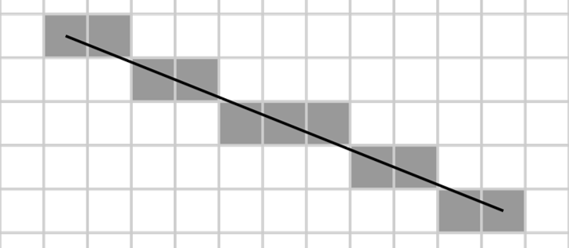
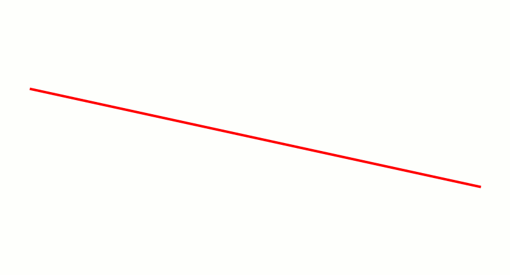
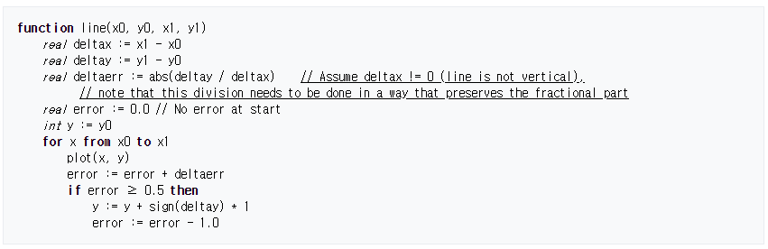
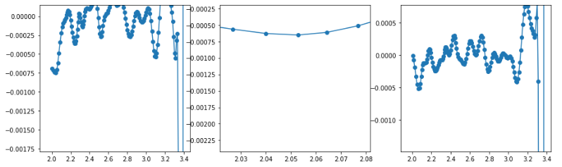
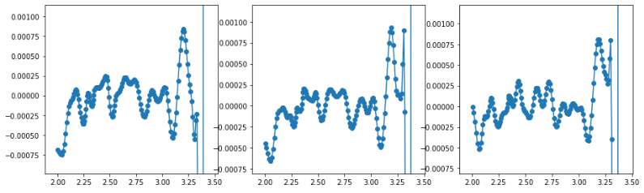

wikipedia: Bresenham’s line algorithm
wikipedia: Xiaolin Wu’s line algorithm
flags’s github
- 연속된 공간에 있는 두 점과 그 사이에 정의된 선분은 어려운 주제는 아닙니다.
- 그러나 이 점들을 비트맵 이미지처럼 유한한 수의 점으로 표현해야 한다면 적절한 위치에 근사하는 것은 아주 귀찮은 문제가 됩니다.
- 제 경우는 점들 사이에 벌어진 거리를 메워야 하는 문제를 해결하기 위해 이 고민을 시작했습니다.

- Brenham’s line algorithm은 위 그림 한 장으로 설명이 가능한 간단한 알고리즘입니다.
- 1962년에 IBM에서 근무하던 Jack Elton Bresenham이라는 분이 만들었다고 하는데, 이런 수준(?)의 연구가 출판되던 시대였군요. :)
- 간단해 보이지만 이 분 덕택에 유한한 2차원 공간에 다양한 도형을 그릴 수 있게 되었습니다. 감사합니다.
- 한 단계 업그레이드 된 버전으로 Wu’s line algorithm이 있습니다.
- 1991년에 공개된 알고리즘인데 antialiasing을 지원합니다.

Bresenham’s algorithm
- $x, y$ 평면상에 두 점 과 이 주어졌을 때, 두 점을 지나는 직선의 방정식은 다음과 같습니다.
- $x$가 1 증가했을 때 증가하는 $y$의 값(=기울기)을 오차로 정해두고, 오차가 0.5를 넘어서면 그 때 $y$를 $y$값 변동 방향으로 1 움직이고, 오차에서는 1을 빼줍니다.
- pseudocode로는 아래와 같이 정리될 수 있습니다.

A Bresenham’s_line_algorithm python code
- 구글링을 통해 Bresenham’s line algorithm code를 여럿 찾을 수 있고, 그 중 하나를 골랐습니다.
- 가파른 구간에서 순서가 바뀌는 문제가 있어 코드를 일부 수정했습니다.
1
2
3
4
5
6
7
8
9
10
11
12
13
14
15
16
17
18
19
20
21
22
23
24
25
26
27
28
29
30
31
32
33
34
35
36
37
38
39
40
41
42
43
44
45
46
47
48
49
50
51class bresenham:
def __init__(self, start, end):
self.start = list(start)
self.end = list(end)
self.path = []
self.steep = abs(self.end[1]-self.start[1]) > abs(self.end[0]-self.start[0])
if self.steep:
self.start = self.swap(self.start[0],self.start[1])
self.end = self.swap(self.end[0],self.end[1])
if self.start[0] > self.end[0]:
_x0 = int(self.start[0])
_x1 = int(self.end[0])
self.start[0] = _x1
self.end[0] = _x0
_y0 = int(self.start[1])
_y1 = int(self.end[1])
self.start[1] = _y1
self.end[1] = _y0
dx = self.end[0] - self.start[0]
dy = abs(self.end[1] - self.start[1])
error = 0
derr = dy/float(dx)
ystep = 0
y = self.start[1]
if self.start[1] < self.end[1]: ystep = 1
else: ystep = -1
for x in range(self.start[0],self.end[0]+1):
if self.steep:
self.path.append([y,x])
else:
self.path.append([x,y])
error += derr
if error >= 0.5:
y += ystep
error -= 1.0
if self.steep and self.start[1] > self.end[1]:
self.path = list(reversed(self.path))
def swap(self,n1,n2):
return np.array([n2,n1])
Application on my case
- 약간의 수정을 통해 제 automated focusing에 존재하던 버그를 잡았습니다.
기존 코드에서는 아래와 같은 버그가 발생했지만,

Bresenham algorithm을 적용한 후에는 아래와 같이 깔끔하게 나옵니다.
